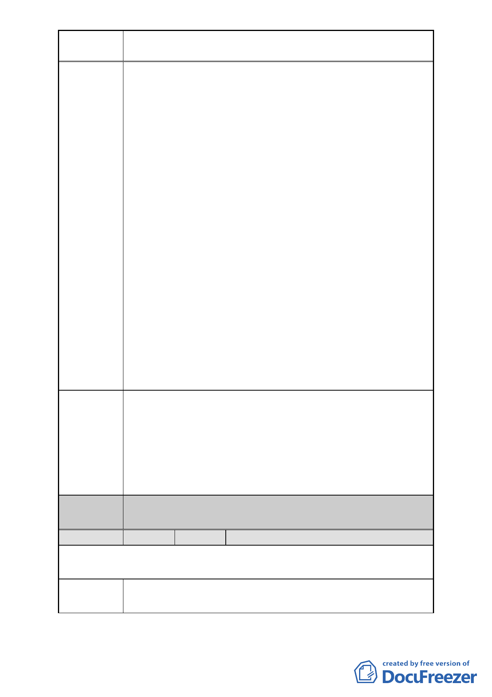

案名
變更臺北市中正區南海段一小段 719、724 地號等 2 筆停車場
用地為廣場用地細部計畫案
不了解實質內容，亦不知相關單位依據何法、何條款將本
區規劃為「廣場用地」，亦不知決策機關及參與決策之人員
名單，實有違政府行政公開、公正、公平、合理之原則。
建請另擇期召開詳細說明會，並將何以規劃為廣場用地之
構想，以及參與決策之單位和參與規劃及決策人員之名
單、理由、會議記錄公布，並發給每位居民。
2.建請取消作為廣場用地：
（1）本用地附近即有中正紀念堂廣場、植物園、二二八公
園…..等等大大小小的公園，且民國 88 年停管處曾經意
欲將本用地申請變更為「廣場用地」，但第 445 次都委
會不同意變更，何以本次又再次將本用地變更為「廣場
用地」，有何實質效益？
（2）本用地為僅有 300 多坪之 L 型畸零地，用以作為廣場，
僅為種幾棵樹放置幾條座椅，卻欲強行將十幾戶居民趕
走，罔顧原住戶之權益，政府相關決策人員有否貫徹馬
政府之「苦民所苦」之良政美德？有何地盡其利可言？
（3）原住戶之房地所有權，在國民黨政府來台後藉口此用地
為日產而遭沒收，數十年來（自民國 39 年起）原住戶
即屢次向政府聲請價購，但均遭拒。馬政府時代竟將本
用地規劃為廣場用地，意欲逼迫原住戶流離失所，敬請
參與決策者先行了解本用地原住戶歷代在此居住之歷
史傳承後，再行妥適規劃，切勿一意孤行。
建議辦法
對於本區原住戶安置建議：
1.將本地區變更為住商用地，由現住戶價購：比照同地區之
廣東同鄉會之價購方式。
2.就地安置：居民自日據時代起即居住於本用地，代代相傳，
對本區有濃厚的感情，以及所有的人脈關係均根植於此
地，本用地住戶不願他遷，建請就地安置住戶，以維護住
戶之權利
委員會
決議
同編號 1。
編號
9 陳情人 中正 1206K03 停車場住戶自救會
第一次陳情（99.12.9.）（連署人：黃漢雄、陳照一、張順誠、廖添福、唐
光雄、翁有德、蕭慈聖、孔志浩、方家泰、詹德遜）
陳情地點 中正區南海段一小段 719、724 地號
- 10 -